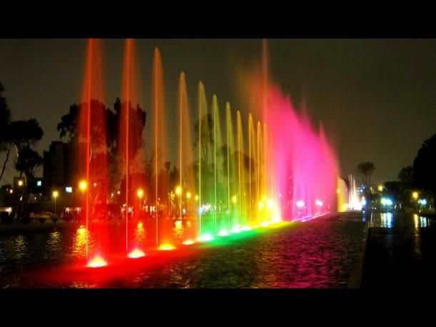
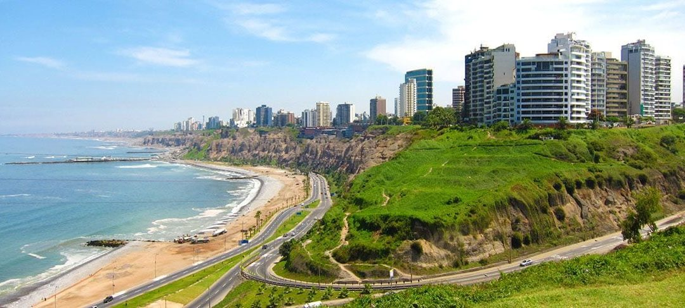
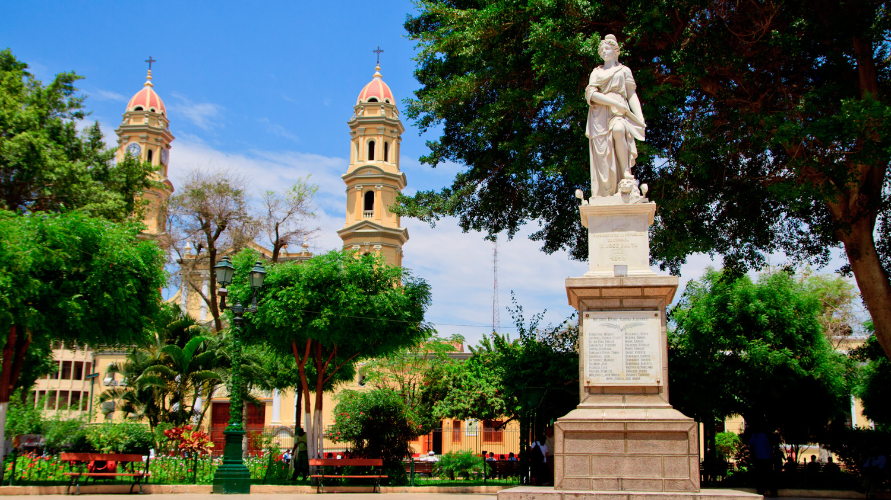
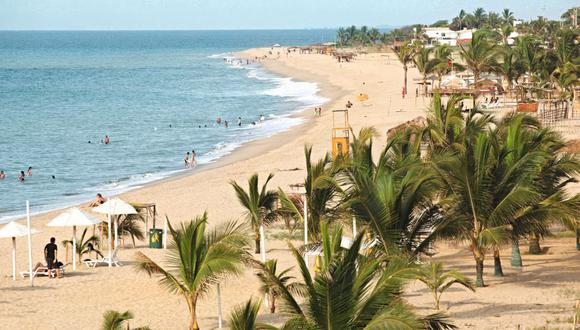

Lima
Lima es la capital de Perú ubicada en la árida costa del Pacífico del país. Pese a que su centro colonial se conserva, es una desbordante metrópolis y una de las ciudades más grandes de Sudamérica. El Museo Larco alberga una colección de arte precolombino y el Museo de la Nación recorre la historia de las civilizaciones antiguas de Perú. La Plaza de Armas y la catedral del siglo XVI son el núcleo del antiguo centro de Lima.
La costa verde
El Circuito de Playas de la Costa Verde, popularmente conocido como la Costa Verde, es una vía ubicada en la ciudad de Lima, capital del Perú y la ciudad del Callao, el Primer Puerto, recorriendo así la parte sur central del litoral limeño y chalaco uniendo los distritos de La Punta, La Perla, San Miguel, Magdalena del Mar, San Isidro, Miraflores, Barranco y Chorrillos.
Siendo que el litoral sur limeño desde la provincia constitucional del Callao hasta el distrito de Chorrillos se caracteriza por contar con un elevado acantilado, la Costa Verde se caracteriza por ser la única vía que se encuentra debajo del barranco y adyacente a la orilla del Océano Pacífico.
Piura
Piura es la capital de la región de Piura, en el noroeste de Perú. Es conocida por sus edificios coloniales, como la Catedral de Piura, con su altar dorado ornamental. La catedral está frente a la Plaza de Armas, una plaza pequeña con árboles de tamarindo. La Casa Museo Almirante Miguel Grau conserva fotos y recuerdos del héroe de guerra del siglo XIX. La Iglesia de San Francisco es donde Piura declaró su independencia de España en 1821.
Playa de Máncora
Máncora es una ciudad turística en la región Piura, en la costa noroeste de Perú. Es conocida por su playa de arena Máncora, cuyas grandes olas atraen a los surfistas. Las playas Pocitas y Vichayito son más tranquilas. La calle principal, Avenida Piura, está repleta de restaurantes y cafés. Los bares de la ciudad dan lugar a una animada vida nocturna. Las termas de la Poza de Barro y los baños de lodo se encuentran al sudeste de la ciudad. Las ballenas migratorias visitan las aguas frente a la costa.